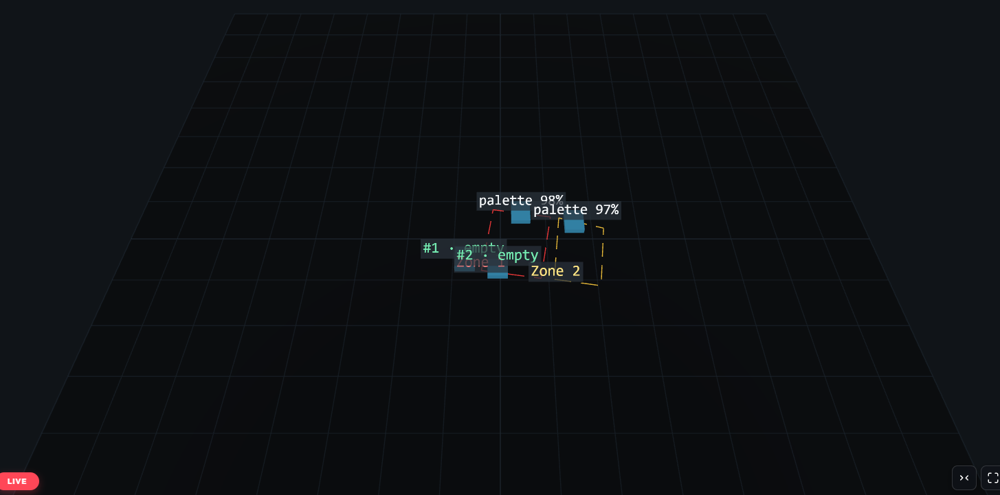
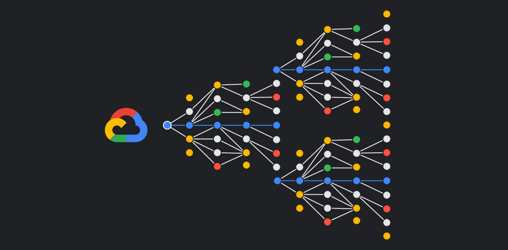

Vision par Ordinateur
Vision Transformers (ViT), segmentation et distillation de connaissances pour des modèles plus rapides et précis.
- ViT
- Segmentation
- Distillation
Ingénieur Vision & Edge-AI
Je déploie la vision
Ingénieur Vision par Ordinateur & Edge-AI — fondé sur 10 ans d'infrastructure IT.
Robotic Vision Module
Indicateurs clés
IT & infrastructure
Vision par Ordinateur
Détection & segmentation
Inférence (Jetson)
Engagement web
Domaines d'expertise
Un pont entre le deep learning et le réel : modèles compressés, embarqués et orchestrés sur des systèmes robotiques.
Vision Transformers (ViT), segmentation et distillation de connaissances pour des modèles plus rapides et précis.
Optimisation et déploiement sur hardware embarqué Nvidia Jetson — jusqu'à −40 % de temps d'inférence.
Communication inter-robots sous ROS, sur une base solide de 10 ans en administration AD, réseaux et support IT.
Travaux sélectionnés

Vision multi-caméras · ONNX/TensorRT · Three.js
Vision industrielle multi-caméras : suivi métrique 2D/3D en temps réel et jumeau numérique 3D pour l'opérateur. Mission Isitec.
Explorer le projet
Python · ROS · PyTorch
Système autonome de communication inter-robots, orchestrant la coordination en temps réel sous ROS.

PyTorch · TensorRT · OpenMMLab
Précision de segmentation améliorée par compression de modèles, déployée pour le tri en temps réel.
Stack technique
Vision Lab
Un laboratoire interactif dans le navigateur : nuage de points 3D, boîtes de détection animées et un mode webcam optionnel — les motifs du quotidien d'un ingénieur vision, rendus tangibles.
Construisons ensemble
Disponible pour un entretien. Discutons vision par ordinateur, robotique et systèmes embarqués.